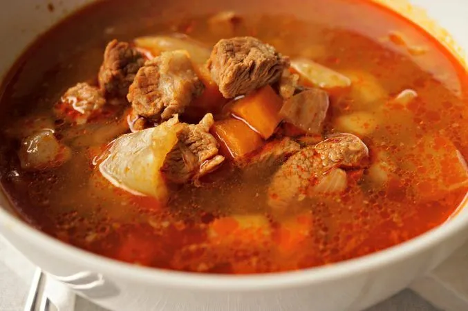

Goulash soup

The name originates from the Hungarian gulyás, which means herdsman. But over time the word has got a second meaning, a meat dish that was prepared by herdsmen.
Ingridients:
- 800 g (~1 3/4 lb) beef, cubed
- 500 g (~1 lb) potatoes, diced
- 2 carrots, diced
- 2 parsley roots, diced
- 1 big onion, finely chopped
- 2 garlic cloves, finely chopped
- 2 tbsp lard
- 2 tbsp sweet paprika
- 1 tsp hot paprika
- 1 green pepper, diced
- 1 bay leaf
- 1/2 tsp black pepper
- 1 tsp caraway seeds
- 3-4 tsp salt
- 1,5-2 l (~8-9 cups) water
- 100 g (~3/4 cup) all-purpose flour
- 1 egg
- 1-2 tsp water
Steps:
- In a heavy pot heat the lard.
- Add finely chopped onion and sauté until translucent.
- Add garlic and beef, and braise until all sides turn white.
- Remove from the heat, sprinkle paprika over the meat, stir to cover evenly, pour in water and return to the heat.
- Add caraway seeds, green pepper, bay leaf, salt and pepper, bring it to a boil, cover and cook over low heat.
- In the meantime make the dough for the noodles.
- Place flour and egg in a bowl, and knead them together into a smooth dough.
- The dough should be shapeable, but not too soft.
- If you find the dough too tough, add some water.
- Pinch fingernail-sized bits from the dough and place them on a kitchen towel.
- Once the meat is nearly done, add diced carrots and parsley roots to the pot.
- When carrots are half cooked, add diced potatoes and pinched noodles (both of them need 20-25 minutes to be tender).
- Serve hot with white bread.
Back to homepage.